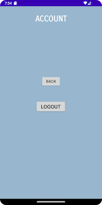
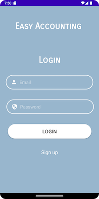
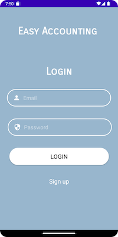
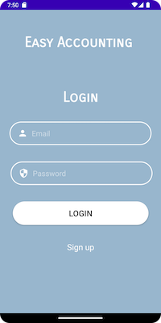
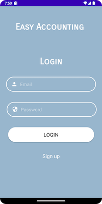

 





Our bookkeeping application is designed specifically for beginners who want to start managing their finances in a planned and reasonable manner. With a minimalistic interface and convenient bookkeeping functions, the app is easy to use and accessible for users who have little to no experience with bookkeeping.
The application includes expenditure and income classification, a map function that allows users to capture the location of their transactions and make receipts more detailed, a calculator for accurate calculations, and the latest financial news to help users stay informed about the market. Our app provides an intuitive way for users to view their balance and be more actively involved in bookkeeping and planning in a more convenient way.
Overall, our bookkeeping app offers an easy, simple, and fast solution for beginners who want to take control of their finances and plan for a better future. With our app, users can get started quickly and easily, without the need for extensive bookkeeping experience or knowledge.
We created a signup and log-in function for users to register their accounts and used shared preference to store the user information so that they can view their previous receipts when they log in. The shared preference was also used for getting the data of specific receipts of a specific user by checking the user_email.
We create a balance activity for users to manage their receipts by using a recycler view to show it. Users can add a new receipt by clicking the add button and they need to choose only one type of either expenditure or income, date and amount to save the receipt successfully. Otherwise, toasted messages will hint to them to complete the missing one.
If users choose two types for expenditure and income, respectively, the checked button will be cleared when they click the save button and they can choose again with a toasted message as a hint. We created two groups of buttons by radio group.
We created a pop-up window for users to choose a date. The calendar date was set until the current date so that users can only choose the date of today or the previous date. The date function was triggered by clicking the date button. The amount EditText was for users to enter numbers by using a numeric keypad and comments for users to enter anything they wanted to note.
Once they finish and click the Done button, they can save the receipt, which will be shown in the recycler view.
We create 5 image buttons at the button for users to either add the new receipt or trigger them to other pages by using explicit intent.
For users who want to revise their receipt, they can click the specific one and view detailed information of the one.They can click the delete button to delete the one but they will be able to edit the receipt after they click the edit button.
The calculate button is for the user to calculate the accurate amount. We created a calculator in our app and connected them with explicit intent. Once users finish calculating the amount, they can click the “Keep it!” button to back to the previous adding page and the result they calculate will show the amount EditText automatically. Additionally, users can also calculate by clicking the calculate button in the homepage and then enter the adding page directly.
The map button is for users to get their current location and they can also search any location they want. We created it by the idea that sometimes users are not familiar with the ambient environment, especially when they are traveling, while these are probably the times when they spend the most and records are most necessary. In that case, commenting their current location as a hint might help. This was also created by explicit intent.
We created the activity mainly relying on implicit intent. Our original intention is to allow users to keep track of their bills while also getting some real-time financial news and financial knowledge through our software. That way they can better manage their finances. We've also added links to live exchange rate queries in case users might have receipts of foreign exchange receipts and expenditures.
User could log out from account page by clicking log out button or go back to home page using back button which is function of explicit intent.
Light sensor: We used light sensor to switch the light and dark mode for our application.
During the implementation of our bookkeeping application, we encountered an interesting challenge related to the display of receipt data from multiple users. Specifically, we found that all receipt data from different users were being shown together in the RecyclerView since we had just users table and receipts table in our database, which was not ideal.
Creating a separate table for each user was not a practical solution, as this would have caused serious data redundancy and made it difficult to manage and organize the data. Instead, we implemented a foreign key SQLite statement to connect the receipts table to a separate user table.
By adding user_email as the primary key of users table and foreign key to the receipts table, we were able to link each receipt record to the corresponding user record. This allowed us to display only the receipt data for the currently logged-in user, rather than showing all receipt data from all users.
This solution not only resolved the challenge of displaying receipt data from multiple users, but it also improved the overall organization and management of the data in our app. It was a valuable learning experience that helped us improve our skills in database management and data organization.